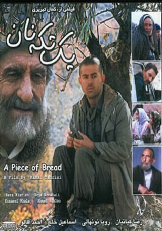

A Piece of Bread
In brief
A naive soldier, his officer and a mullah travel to investigate a reported miracle in a remote village.
- Directed by
- Kamal Tabrizi
- Country
- Iran
- Year
- 2005
- Running time
- 93 minutes
- Festival section
- World Cinema
- With
- Esmeel Khalaj, Ahmad Aghaloo, Reza Kianian, Roya Nonahal
- Screenings
- Sat Oct 8, 12:30 PM, Rafael
Source: Festival programme (page 39 of the PDF): Wayback Machine copy; Poster from Wikipedia (fa): یک تکه نان